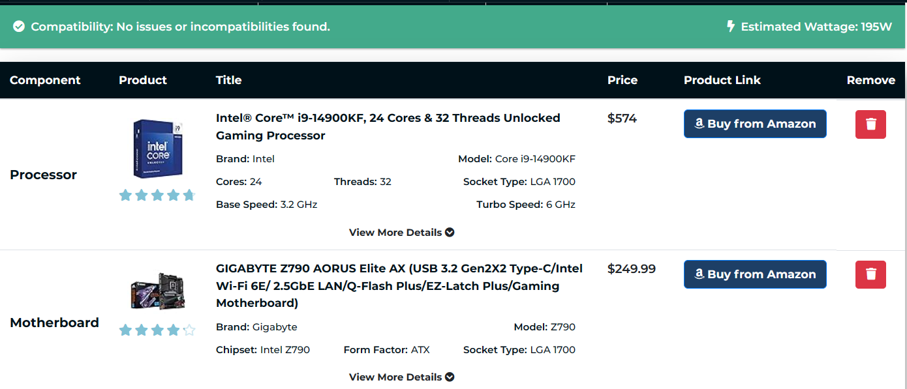
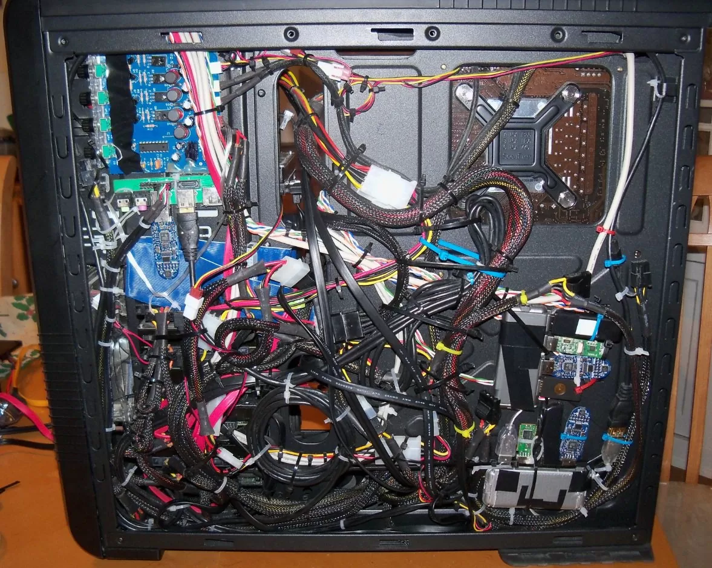

1. PC Building Websites
Custom PC part picking websites are incredibly helpful for someone who is building their first PC and dont know what components they accually need. These part picking sites are setup so you can go down the line choosing your desired parts untill you have selected every part nessesary to build a functining PC all on one webpage.
Helpful features about these sites are:
- Totaling up the sum of all components.
- Displaying the total power wattage your PC will consume.
- Making sure all chosen PC parts are compatible with each other.
- can help you change parts on an existing PC.
this recomended custom PC part Picker. offical PCbuilder website.
2. Cable Management
Cable management is an importent part to building your custom PC but not nessasary. If you care at all what you want your PC to look like, your going to want to succesfully cable manage your build. The first thing you can do to have good cable management is choosing a PC case that is advanced enough to slots and paths for your cords to follow. When it comes down to it, if managing your cables seems to complicated then dont worry about it. It could slightly impede airflow and look ugly but your computer will still work either way.
I recomend watching Linus Tech Tipsfor tutorials or just entertainment.
Here is an advanced guide to perfectly cable managing your PC. "ultimate cable management guide"
Back to Top